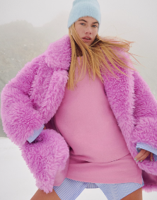
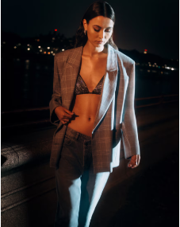

Blackfriday
Dit is onze grootste sale van het jaar
Tot -80% op alles met de app
Download en bespaar ...als eerste
Slechts beperkte tijd geldig. Zolang de voorraad sterkt. Items afgeprijsd zoals weergegeven.
-
MEEST POPULAIR
-

KOUD WEER
-

DE PARTY-DROP
-
SNEAKERS
Geef je vrijetijdsoutfits een boost met ASOS, met on-trend herenkleding en accessoires van je favo merken. Til je laagjesgame naar een hoger niveau met de geavanceerde basics van Only & Sons met *al* die must-have kledingkast-essentials – van smart casual polo's tot oversized T-shirts en overhemden die je zo aangooit in ton sur ton tinten. Als je op zoek bent naar broeken en jeans, van on-trend cargobroeken tot klassieke chino's en denim, dan moet je bij Pull&Bear zijn – terwijl de edit van Jack & Jones met sneakers en kantoorschoenen je schoeisel on point houdt (denk aan derby's, brogues en Chelsea boots om de outfit af te maken). Voor stijlen die je goed warm houden, filter je op The North Face voor iconische puffers in colourblocktinten en veelzijdige monochromen. En om je in het zweet te werken, hebben Nike en New Balance athleisurekleding voor je klaarliggen – met techgerichte prestatiekleding die gegarandeerd vocht afvoert en van hardlopen in de vroege ochtend een fluitje van een cent maakt. Scrollen maar!